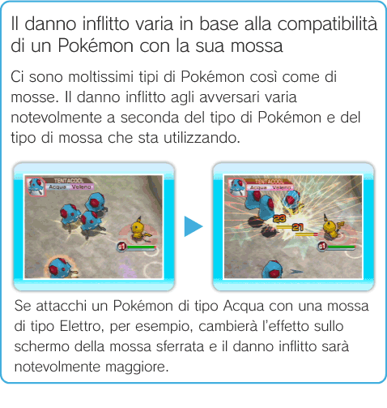
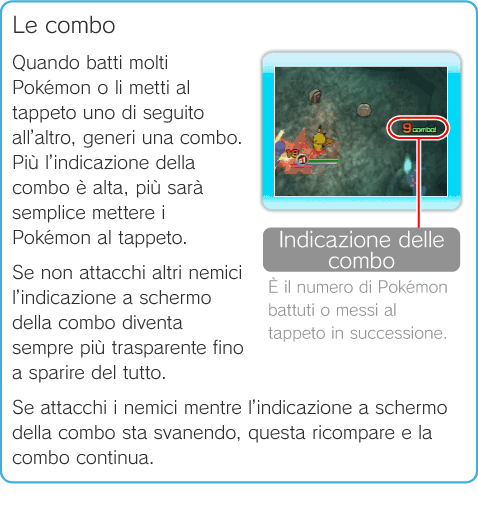

15 |
Come lottare |
 |
|
Sia nei Livelli sia in Battle Royale affronterai tanti Pokémon con quello che tu stai controllando.
Attaccare Se premi Se vuoi insegnare loro mosse aggiuntive, vai nell’edificio INSEGNA MOSSA del Terminale (vedi pag. 12: Servirsi degli edifici). Inoltre, a volte riuscirai a stringere amicizia con i Pokémon che riesci a battere (vedi pag. 13: Stringere amicizia con i Pokémon al tappeto).

Colpi Critici Durante gli attacchi può capitare di sferrare un Colpo Critico. Il Pokémon che lo subisce resta intontito e rimane di fatto in uno stato che viene definito "Traballo" per qualche secondo. Sconfiggerlo in questo stato sarà più facile.
Stati alterati Alcune mosse particolari come Velenago possono alterare per un determinato periodo di tempo lo stato di chi le sferra o di chi le subisce. Tra gli stati alterati ve ne sono alcuni, come ad esempio Veleno, che fanno diminuire i PS del nemico o, come Attacco ↑, che giovano alle caratteristiche di chi li usa.
 |
 e
e  sul telecomando Wii puoi usare le mosse. Ma ricorda che ci sono Pokémon che conoscono solo una mossa.
sul telecomando Wii puoi usare le mosse. Ma ricorda che ci sono Pokémon che conoscono solo una mossa.
 |
 |
 |